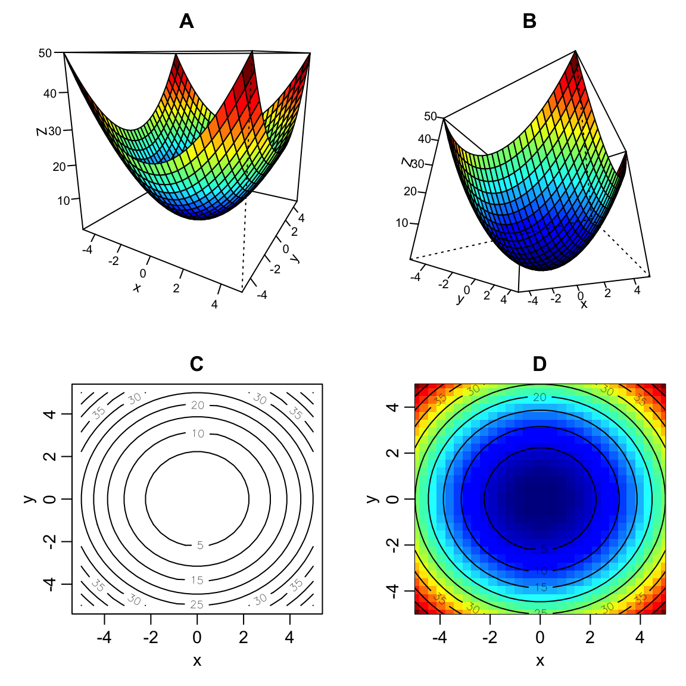
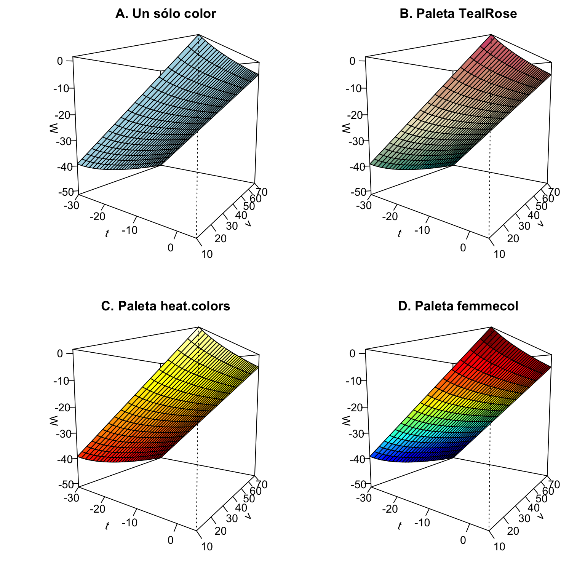

6.1 Gráficos de funciones en varias variables
6.1.1 Introducción
Las funciones (o modelos) en varias variables son comunes en ciencias biológicas y afines. Como ejemplo considere el índice de viento-enfriamiento (wind-chill index) el cual, de acuerdo Stewart & Day (2015), es usado para medir la severidad del clima frío que ocurre en regiones invernales. Este índice (\(W\)) se mide en función de la temperatura (\(t\)) y la velocidad del viento (\(v\)); es decir, \(W = f(t,v)\). La Tabla 6.1 muestra los valores que toma \(W\) para algunas combinaciones de \(t\) y \(v\).
##
## Attaching package: 'kableExtra'## The following object is masked from 'package:dplyr':
##
## group_rows| \(v = 10\) | \(v = 20\) | \(v = 30\) | \(v = 40\) | \(v = 50\) | \(v = 60\) | \(v = 70\) | |
|---|---|---|---|---|---|---|---|
| \(t = -30\) | -39.2 | -43.1 | -45.7 | -47.6 | -49.1 | -50.4 | -51.5 |
| \(t = -25\) | -33.2 | -36.8 | -39.1 | -40.9 | -42.3 | -43.4 | -44.5 |
| \(t = -20\) | -27.2 | -30.5 | -32.6 | -34.2 | -35.4 | -36.5 | -37.4 |
| \(t = -15\) | -21.2 | -24.2 | -26.0 | -27.4 | -28.6 | -29.5 | -30.4 |
| \(t = -10\) | -15.2 | -17.8 | -19.5 | -20.7 | -21.7 | -22.6 | -23.3 |
| \(t = -5\) | -9.2 | -11.5 | -12.9 | -14.0 | -14.9 | -15.6 | -16.3 |
| \(t = 0\) | -3.2 | -5.2 | -6.4 | -7.3 | -8.1 | -8.7 | -9.2 |
| \(t = 5\) | 2.8 | 1.2 | 0.2 | -0.6 | -1.2 | -1.7 | -2.2 |
La organización de los valores de \(W\) en la Tabla 6.1 es adecuada en tanto que permite identificar como cambia \(W\) cuando el viento permanece constante (en algún valor) y la temperatura cambia, o viceversa. Por ejemplo, a una temperatura constante de \(t = -15\,^{\circ}\)F, el índice \(W\) se hace más negativo a medida que la velocidad del viento incrementa.
De modo más general, en la Tabla 6.1 se logra identificar que a temperaturas más bajas (p.e., \(t = -25\,^{\circ}\)F o \(t = -30\,^{\circ}\)F) y vientos con mayor velocidad (p.e., \(v = 40\) o \(v = 50\) km/h), el índice \(W\) se vuelve más negativo, representando una mayor severidad del clima frío.
A partir de datos reales se ha podido estimar el siguiente modelo para el índice \(W\) (Stewart & Day, 2015, ejercicio 9.1-4):
\[\begin{equation} W = f(t,v) = 13.2 + 0.62t - 11.37v^{0.16} + 0.4tv^{0.16} \tag{6.1} \end{equation}\]
Usando la función (6.1) se calcularon los valores de \(W\) de la Tabla 6.1. En R, para obtener los valores de \(W\) de la Tabla 6.1 y, aún más, organizados de esa forma, se puede usar el comando outer el cual recibe tres argumentos, un vector X, un vector Y y una función FUN en la cual se evaluaran las combinaciones de valores dados en X e Y.
# Se define la funcion de W:
fw <- function(t,v) 13.2 + 0.62*t - 11.37*(v^0.16) + 0.4*t*(v^0.16)
# Se definen los vectores para t, v:
v <- seq(from = 10, to = 70, by = 10) #
t <- seq(from = -30, to = 5, by = 5)
# Se evalua la funcion en todas las combinaciones de (t, v) mediante
# el comando outer:
W <- outer(X = t, Y = v, FUN = fw)
# Dado que la matriz W queda sin nombres de fila y de columna, se
# adicionan nombres de fila y columna:
rownames(W) <- paste0('t = ', t)
colnames(W) <- paste0('v = ', v)
# Se imprime el resultado
round(W, 1)## v = 10 v = 20 v = 30 v = 40 v = 50 v = 60 v = 70
## t = -30 -39.2 -43.1 -45.7 -47.6 -49.1 -50.4 -51.5
## t = -25 -33.2 -36.8 -39.1 -40.9 -42.3 -43.4 -44.5
## t = -20 -27.2 -30.5 -32.6 -34.2 -35.4 -36.5 -37.4
## t = -15 -21.2 -24.2 -26.0 -27.4 -28.6 -29.5 -30.4
## t = -10 -15.2 -17.8 -19.5 -20.7 -21.7 -22.6 -23.3
## t = -5 -9.2 -11.5 -12.9 -14.0 -14.9 -15.6 -16.3
## t = 0 -3.2 -5.2 -6.4 -7.3 -8.1 -8.7 -9.2
## t = 5 2.8 1.2 0.2 -0.6 -1.2 -1.7 -2.26.1.2 Tipos de gráficos para funciones de tres variables
Para gráficar funciones del tipo \(z = f(x,y)\) tres alternativas de uso común son:
Gráficos en tres dimiensiones (3D) Este tipo de gráfico (Figuras 6.1A y 6.1B) tiene la ventaja de que muestra directamente el patrón de la superficie que se genera por la combinación de los puntos \((x, y, z)\), pero tiene la desventaja que, dependiendo del angulo del gráfico, esconde algún lado del mismo. Por esto puede ser necesario mostrar el mismo gráfico en al menos dos angulos diferentes. Adicionalmente, la visualización mejora si se agrega un gradiente de colores a la superficie.
Gráficos de contorno (2D): En este tipo de gráficos (Figura 6.1C), los pares de valores \((x, y)\) se ubican en un plano cartesiano tradicional y los valores \(z\) se muestran como curvas de nivel (o de contorno). El patrón de la superficie queda implicito en las curvas de nivel y toma un poco más de tiempo su lectura. No obstante, todo el patrón puede ser apreciado.
Mapas de colores (2D): Este tipo de gráficos (Figura 6.1D) es similar al de contorno, sólo que ahora el eje \(z\) se muestra con una escala de colores que representaría el gradiente de valores que toma \(z\). Los mapas de color se pueden complementar con las curvas de nivel del gráfico de contorno para enfatizar el patrón de la superficie.

Figura 6.1: Tres alternativas para mostrar funciones del tipo \(z = f(x,y)\). A y B: Gráfico 3D en dos angulos diferentes; C: Gráfico de contorno; D: Mapa de colores con curvas de nivel o contorno superimpuestas. La función graficada es \(f(x,y) = x^2 + y^2.\)
6.1.3 Opciones gráficas en R
Para gráficar funciones del tipo \(z = f(x,y)\) en R, como aquella del índice \(W\), existen varias alternativas, algunas de ellas son:
- Comandos
persp,contoureimagedel paquete graphics (este es el paquete base de R para realizar gráficos). Con estos comandos se realizaron los gráficos de la figura 6.1. - El comando
plotFundel paquete mosaic produce, por defecto, un gráfico de contorno con colores, basado en el paquete lattice. Tiene pocas opciones de personalización a no ser que se conozca a profundidad el sistema lattice de graficación. - Comandos del paquete rgl, especialmente
persp3d. Produce gráficos interactivos que se pueden girar con el ratón. La asignación de colores requiere algo de progrmación. - Comandos del paquete scatterplot3d.
6.1.3.1 Comando persp (graphics)
El comando persp (paquete graphics) permite gráficar superficies en el espacio \((x,y,z)\). Solicita tres argumentos, un vector x, un vector y y una matriz z que representa los resultados de evaluar la función en los pares (x, y). La matriz z es aquella generada por el comando outer mostrado arriba (Tabla 6.1). La Figura 6.2 muestra este gráfico para la función del índice \(W = f(t,v)\) con cuatro alternativas de color de la superficie.

Figura 6.2: Gráficos 3D realizado con el comando persp para la función del índice \(W = f(t,v)\). (A) Un sólo color (lightblue); (B) Paleta TealRose; (C) Paleta heat.colors; (D) Paleta femmecol (paquete shape)
El código que realiza la Figura 6.2 es el siguiente:
# Se carga libreria shape
library(shape) # para comando drapecol, femmecol
# Definicion de vectores, v, t, y matriz W:
v <- seq(from = 10, to = 70, by = 2)
t <- seq(from = -30, to = 5, by = 2)
W <- outer(X = t, Y = v, FUN = fw)
# Se definen tres gradientes de color:
colB <- hcl.colors(n = 16, palette = 'TealRose' , rev = F)
colC <- heat.colors(n = 16)
colD <- femmecol() # del paquete 'shape'
# Se inicia grafico:
par(mfrow = c(2,2), mar = c(3.5,3.5,2,0.5), mgp = c(2,1,0), cex = 0.9)
persp(x = t, y = v, z = W, ticktype = 'detailed', theta = 35,
phi = 6, col = 'lightblue', main = 'A. Un sólo color')
persp(x = t, y = v, z = W, ticktype = 'detailed', theta = 35,
phi = 6, col = drapecol(W, col = colB) , main = 'B. Paleta TealRose')
persp(x = t, y = v, z = W, ticktype = 'detailed', theta = 35,
phi = 6, col = drapecol(W, col = colC) , main = 'C. Paleta heat.colors')
persp(x = t, y = v, z = W, ticktype = 'detailed', theta = 35,
phi = 6, col = drapecol(W, col = colD) , main = 'D. Paleta femmecol')Algunos aspectos a explicar del código anterior son:
Los comandos
hcl.colorsyheat.colorsyfemmecolcrean un vector de colores en gradiente. El comandohcl.colorspermite aplicar unapalettecuyos opciones se pueden consultar con el comandohcl.pals. Sólo digitehcl.pals()para ver las paletas disponibles. Además, escriba?hcl.colorspara ver la ayuda de estos comandos y encontrar otros simialres. El comandofemmecol(del paquete shape) también crea un vector de colores en gradiente con la combinación darkblue-blue-cyan-yellow-red-darkred.El comando
drapecol(del paquete shape) recibe la matrizzque usamos enperspy un vector de colores (generados por un comando tal comohcl.colorsofemmecol) y realiza la asignación adecuada de los colores a la superficie dibujada. Note quedrapecoles un comando diseñado especialmente para usar dentro depersp.
Stewart, J., & Day, T. (2015). Biocalculus: Calculus, probability, and statistics for the life sciences. Cengage Learning.
References
Stewart, J., & Day, T. (2015). Biocalculus: Calculus, probability, and statistics for the life sciences. Cengage Learning.